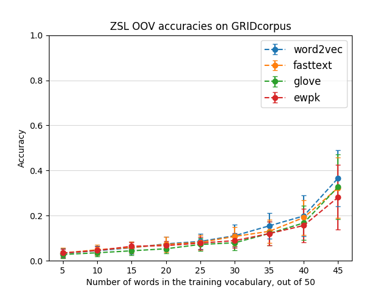
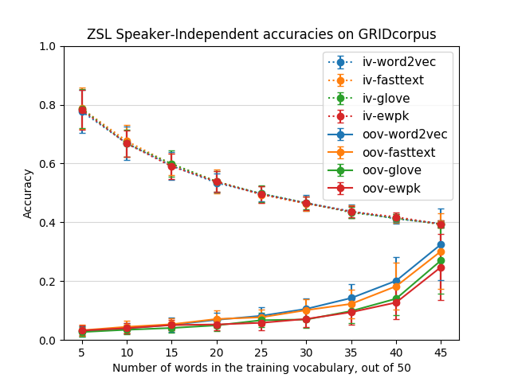

Figure 0: ZSL Framework

Figure 1: Accuracies of ZSL on out-of-vocabulary words vs number of words in the training vocabulary (out of 50), for different word embeddings. Mouth videos are embedded using an LSTM Lipreader trained on GRID.

Figure 2: Accuracies of ZSL on Speaker-Independent data, for both in-volcabulary and out-of-vocabulary words, vs number of words in the training vocabulary (out of 50), for different word embeddings. Mouth videos are embedded using an LSTM Lipreader trained on GRID.
Analysis
Read Diagnosing Error in Object Detectors - Derek Hoiem et al, ECCV 2012; Towards Transparent Systems: Semantic Characterization of Failure Modes - Aayush Bansal, Ali Farhadi, Devi Parekh, ECCV 2014; and other related ones
Derek Hoiem et al. analyse distribution of output False Positives on full set of images, using better segregation in object attributes (provided)
Aayush Bansal et al. cluster the attribute vectors (provided) of all mistake images, and disciminates between them and non-mistake using logistic regression
ZSL
Input: Feature vector from LSTM Lipreader's encoding of video
Tried with different word-embeddings: word2vec, fasttext, GloVe, Eigenwords with prior knowledge
Abyssmal results for OOV, better-than-standard result for SI
Better results than standard for Speaker-Independent setting: 40%
Analysis
To design attributes for GRID, LRW: face pose, face size, mouth-to-face ratio
Analyze GRID, LRW failure modes
Apply discriminative clustering on them?
To read Predicting Failures of Vision Systems - ..., Devi Parekh, CVPR 2014; Failures of Gradient-Based Deep Learnin - Shai Shalev-Shwartz et al. - MLR, arXiv
ZSL
Increase size of video encoding of LSTM Lipreader from 64 to 256 (standard used by VGG)
Implement SyncNet to use as video encoding (since better than even LRW Lipreader)
Some other word embedding? Like visually semantic word embeddings?
Adversarial - Gannin and Lempitsky; Zheng Li (Trevor Darrel's), Ming... (Michael Jordan's) - MMD (Max mean discrepancy) loss could be better